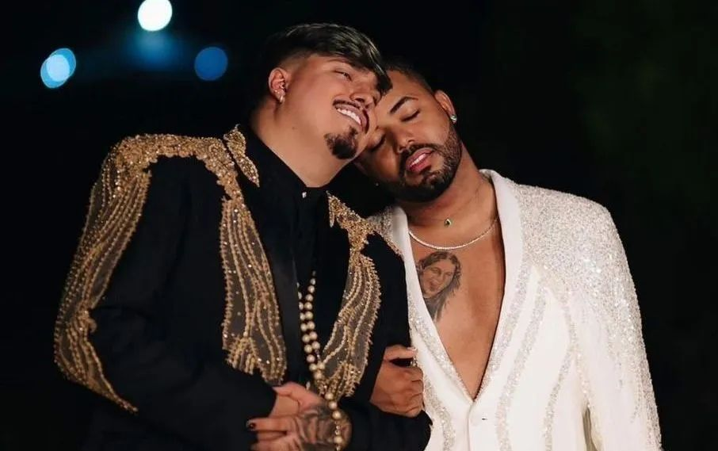

“O que me assusta não é o barulho dos maus, é o silêncio dos bons”, o influenciador Felca repete as palavras de Martin Luther King, fazendo-as dele também sobre o caso de adultização, (ato de fazer a criança e agir e se portar como adulto por influência de outros adultos).
E é sobre esse assunto que Felipe Bressanim, mais conhecido como Felca, tem se manifestado ultimamente. Em seu vídeo no canal do YouTube, de quase 50 minutos, o jovem produtor explica de forma simples e objetiva como funciona o algoritmo, a mente dos pedófilos e sobre o caso do Hytalo Santos.
Hytalo Santos, de 28 anos, está sendo investigado pela polícia e pelo Ministério Público por conta de sua história com uma menor de idade. Testemunhas e amigos afirmam que eles se conheceram quando a garota tinha apenas oito anos. Ela ia para a sua aula de dança e, com o passar do tempo e o ganhar da amizade, Hytalo se aproximou da menor, onde começaram a produzir dancinhas para a internet, até que tudo se estendeu.. Com a vinda de lucros monetários, Hytalo Santos ficou animado, pois veio de uma família humilde, assim como a adolescente.
Ele notou que, ao expor menores de idade, iria dar essa reciprocidade, começou a fazer com mais frequência e com outros adolescentes da mesma idade ou até mais jovem. Contudo, algo que chamou a atenção do público foi: como uma criança de 13 anos postava conteúdo em que mostrava e insinuava o seu corpo e os pais não falavam nada? Até mesmo ter diversas tatuagens e ter sido exposta e influenciada a fazer uma cirurgia plástica no corpo ou pelo aborto espontâneo em que teve.
Agora, Hytalo Santos e seu cônjuge, Israel Vicente, mais conhecido como MC Euro, estão sendo investigados por tráfico humano, exploração de menor e exploração sexual.
A menor foi às redes sociais defender o influenciador Hytalo Santos, dizendo que a tirou de um lar problemático e lhe deu melhores condições sociais e afetivas.
E por que Felca decidiu fazer essa denúncia e qual seria o motivo de ter conseguido chamar a atenção dos telespectadores? Ele percebeu o quão ruim era essa exposição. Notou-se que aquilo era ruim para as crianças e tanto a sociedade quanto o influenciador ficavam mal de apenas observar sem agir. O vídeo seguiu-se de uma denúncia formal, feita pelo influenciador, no qual tem documentos físicos e está tendo um hype maior no momento, tirando os meses em que ele juntou as provas.
Com isso, o Ministério Público acatou a denúncia e o influenciador Hytalo e seu companheiro estão presos, aguardando as investigações.
